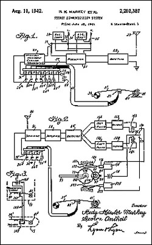
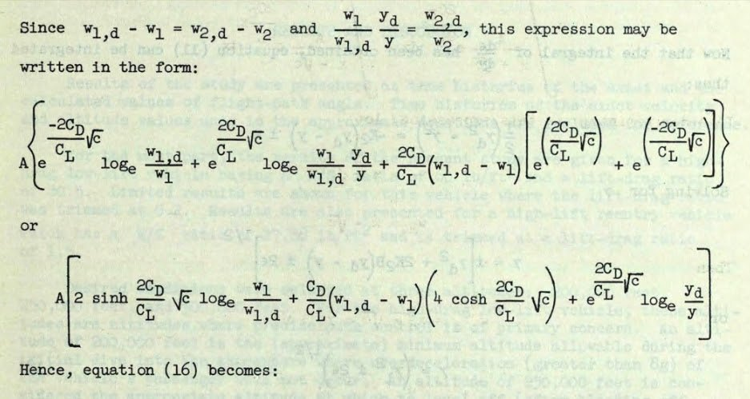

Women in Computing from 1800 to the Present
Embark upon the enthralling virtual museum exposition, "Women in Computing from 1800 to the Present," an entrancing odyssey that accentuates the astounding contributions of women to the unfolding of computing and technology. As you traverse the exhibit, you shall uncover the frequently eclipsed narratives of these pioneering women and their momentous influence on the realm of computing.
This exhibit extols the resourcefulness, tenacity, and fortitude of women as they surmounted obstacles and defied societal norms to etch their indelible imprints on the annals of computing history. From the nascent days of Ada Lovelace, esteemed as the inaugural computer programmer, to the contemporary trailblazers sculpting the technological future, this exhibit unveils the potent legacy of women in computing.
Throughout your exploration, you shall stumble upon the chronicles of extraordinary women, such as Grace Hopper, who conceived the expression "debugging" and held a crucial role in the genesis of programming languages; Adele Goldberg who co-created Smalltalk-80 a programming language that led to the inspiration of the first gui, and Katherine Johnson, whose mathematical prowess aided NASA in propelling astronauts to the Moon. You will additionally acquire knowledge about the inestimable contributions of women in the domains of programming, software engineering, gaming, artificial intelligence, and cybersecurity.
We entreat you to submerge yourself in the opulent history of women in computing as you delve into their revolutionary accomplishments, uplifting tales, and the enduring impact they have wielded on the sphere of technology. As you navigate through the exhibit, you should aspire to develop a more profound reverence for the essential role women have enacted in molding the digital epoch and be galvanized by their phenomenal achievements.
Embark on an enthralling exploration into the enigmatic realm of the Analytical Engine, a trailblazing contraption that established the bedrock for contemporary computing. Originating in the initial phase of the 19th century from the ingenious cerebrations of the prodigious mathematician Charles Babbage, the Analytical Engine emerged as a mechanical wonder with aspirations to metamorphose the manner in which computations were executed. This prophetic apparatus was devised to exhibit programmability, possessing the aptitude to decipher convoluted mathematical quandaries, and even harbored the potential to generate elaborate visualizations, encompassing graphs and charts.
The Analytical Engine stood as an eloquent tribute to Babbage's resourcefulness, as he assiduously orchestrated its elaborate framework of cogwheels, fulcrums, and revolving cylinders. Even though the apparatus was not entirely constructed during his existence, the notion of the Analytical Engine manifested as an indispensable landmark in the chronicles of computing. It galvanized forthcoming lineages of researchers and technologists, embracing the illustrious Ada Lovelace, who is frequently esteemed as the inaugural computer programmer on a global scale. (https://www.britannica.com/biography/Ada-Lovelace)

The invention, designated as the "Secret Communication System" (U.S. Patent 2,292,387), was submitted by Hedy Lamarr and George Antheil on the 10th of June, 1941, and subsequently authorized on the 11th of August, 1942. This groundbreaking system delineated a method capable of swiftly alternating between a staggering 88 distinct frequencies, rendering it virtually impervious to enemy detection or interference. The genesis of this innovative frequency-hopping technology can be traced back to Lamarr's familiarity with player pianos, which employed perforated paper rolls to orchestrate the tune. Antheil, an accomplished composer, harnessed his expertise in musical composition to facilitate the system's design.
Albeit the technology remained unutilized during wartime, their trailblazing efforts established the foundation for the evolution of spread-spectrum communication technology, which presently constitutes an indispensable component of Wi-Fi, Bluetooth, and GPS systems. In contemporary times, we extol Hedy Lamarr not solely for her mesmerizing cinematic performances but also for her inestimable contributions to the realm of science and technology. Her patent manuscript stands as an enduring tribute to her intellect, ingenuity, and perseverance, conclusively demonstrating that beauty and intellect can, in fact, coexist harmoniously. (https://www.theatlantic.com/technology/archive/2010/09/celebrity-invention-hedy-lamarrs-secret-communications-system/62377/)
Behold the mesmerizing complexity of the Diagram of an Algorithm for the Analytical Engine, a pioneering contraption conceived by the founding father of computing, Charles Babbage, and vivified through the extraordinary notations and mathematical dexterity of the world's inaugural programmer, Ada Lovelace. This avant-garde apparatus, diligently crafted to execute intricate computations, was explicitly devised to decipher the enigma of the Bernoulli numbers - a succession of rational numerals deeply intertwined with number theory and calculus.
The diagram unveils the sheer brilliance of Babbage's ingenuity, delineating the indispensable constituents of the Analytical Engine, such as the Mill (the processing nucleus) and the Store (the mnemonic unit), which were ingeniously interlinked to perform arithmetic operations. Ada Lovelace's exceptional commentaries illuminate the procedure, divulging the sequential calculations that the engine was adept at performing, and accentuating her profound comprehension of the machine's capabilities.
This phenomenal synergy between Babbage and Lovelace established the groundwork for contemporary computing, with the Analytical Engine's algorithm acting as a harbinger for the algorithms that drive today's digital realm. As we immerse ourselves in the intricacies of this enthralling diagram, we are reminded of the unparalleled sagacity and prescience of these two trailblazers, who foresaw a future where contrivances could manipulate numerals and symbols with unrivaled exactitude, irrevocably altering the trajectory of human history. (https://blogs.bodleian.ox.ac.uk/adalovelace/2018/07/26/ada-lovelace-and-the-analytical-engine/)

Katherine Johnson, an extraordinary mathematician and unsung luminary, profoundly revolutionized the realm of cosmic exploration with her unparalleled capacity to compute intricate mathematical formulas. As an avant-garde African American woman within NASA's ranks, she was indispensable in securing the triumph of America's maiden manned space odyssey, Alan Shepard's Freedom 7 expedition, and the epoch-making Apollo 11 lunar landing.
Johnson's consummate mastery in celestial navigation, orbital dynamics, and trajectory scrutiny rendered her an invaluable cornerstone of the space program. Her trailblazing endeavors encompassed determining the exact trajectory for John Glenn's momentous orbital voyage, necessitating the resolution of a plethora of equations that considered the Earth's rotation, gravitational influences, and the spacecraft's velocity as shown in the above image. The precision of Johnson's calculations was so extraordinary that even upon the emergence of computers, astronauts and engineers continued to depend on her to corroborate the machine-generated outcomes.
In acknowledgement of her phenomenal accomplishments, Katherine Johnson received the prestigious Presidential Medal of Freedom in 2015. Her legacy stands as an enduring tribute to the potency of tenacity, intellect, and transcending boundaries. Johnson's mathematical prowess and equations not only catapulted humanity to unprecedented pinnacles in space exploration but also demonstrated that with unwavering determination and exceptional aptitude, anyone can aspire to touch the stars. (https://www.space.com/katherine-johnson.html)
Behold the awe-inspiring Smalltalk-80 GUI, a trailblazing invention that sprang forth from the ingenious intellect of Adele Goldberg and her Xerox PARC collaborators during the twilight of the 1970s. Smalltalk-80 transcended the realm of mere programming languages, embodying a visionary integrated development environment (IDE) that forever altered the landscape of computer programming.
As an architect of the Smalltalk programming language, Goldberg's monumental influence sculpted the destiny of software development. Her pioneering efforts formed the bedrock of contemporary object-oriented programming, an indispensable pillar of computer science. The Smalltalk-80 GUI, replete with its inviting interface, facilitated a more organic, visually engaging interaction between programmers and computers. This marked a radical departure from the text-centric programming languages that held sway during that epoch.
This captivating image exemplifies the unassuming sophistication of the Smalltalk-80 interface, ingeniously crafted upon the tenets of direct manipulation, vivid object portrayal, and instantaneous feedback. These precepts now form the crux of modern user interfaces and have left an indelible mark on the design of prevalent operating systems, including macOS, Windows, and Linux.
The extraordinary legacy of Adele Goldberg's contributions to computer science transcends temporal boundaries and continues to invigorate the software developers of today. The Smalltalk-80 GUI stands as a tribute to her resourcefulness, prescience, and unwavering dedication to rendering technology more approachable and intelligible for all. As we gaze upon this historical vignette, let us honor and extol the groundbreaking endeavors of Adele Goldberg and her enduring imprint on the realm of computing. (https://spectrum.ieee.org/qa-adele-goldberg-on-the-legacy-of-smalltalk#toggle-gdpr)
In summation, the digital gallery exposition entitled "Women in Computing from 1800 to the Present" stands as a formidable declaration of the unyielding spirit and exceptional inventiveness manifested by women who have been instrumental in sculpting the computing terrain. As you exit this display, we hope you take with you a heightened appreciation for the pioneering achievements of these trailblazing females and a refreshed comprehension of their inestimable input to the perpetually advancing domain of technology.
Our aspiration is that by shedding light on the narratives of these remarkable women, we not only pay homage to their enduring legacies but also ignite the imaginations of forthcoming generations of innovators, intellectuals, and trailblazers to question the norm and persist in expanding the horizons of what is feasible in computing and beyond. May the chronicles of Ada Lovelace, Grace Hopper, Adele Goldberg, Katherine Johnson, and innumerable others fortify your resolve to envision grandly, persist in the face of challenges, and etch your own ineffaceable impact on the world.
As you take leave from this captivating journey, bear in mind that the chronicle of women in computing is not merely an assemblage of singular accomplishments; it is an affirmation of the united vigor, tenacity, and acumen of women who dared to surmount the improbable and reshape the trajectory of human advancement. Let us extol and adopt their exceptional offerings, and let their tales serve as a guiding light for all who endeavor to carve their own routes in the exhilarating frontier of technology.